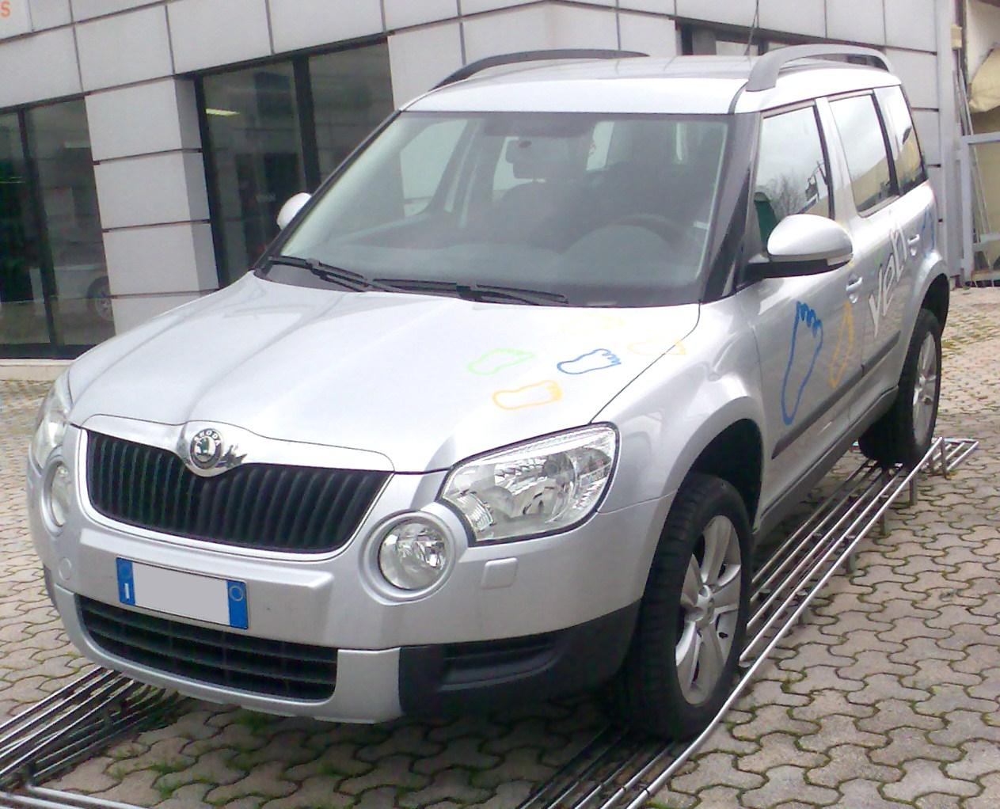

Škoda в роки Другої світової війни
Друга світова війна в історіїВ роки Другої світової війни Škoda стала частиною економічної системи Третього рейху і практично повністю перейшла на випуск військової продукції. Заводи випускали газогенераторні вантажівки, гусеничні тягачі, а на базі розробленої в 1936 вишуканої моделі Škoda Superb випускалися армійські позашляховики. Оскільки завод орієнтувався на випуск військової продукції, у 1945 в результаті бомбардувань було знищено до 70 % заводських потужностей.
-
Škoda Felicia
На початку вісімдесятих з'явилася Škoda Favorit. Дизайн кузова розробляли на знаменитому італійському ательє Bertone, конструкція шасі була чеською. Автомобіль вийшов непоганий, користувався стійким попитом. Але наприкінці 90-х економічні проблеми змусили компанію Škoda шукати іноземного партнера: 16 квітня 1991 року було підписано угоду з концерном Volkswagen. Німці розуміли, що відразу випустити сучасний європейський автомобіль під маркою Skoda не вийде. Тому було вирішено модернізувати Favorit, що випускався з 1988 по 1995 роки, і налагодити його серійний випуск до тих пір, поки за допомогою Volkswagen не буде розроблено новий сучасний автомобіль і впроваджено його у виробництво на заводі Škoda. В конструкцію Favorit було внесено кілька сотень змін, помітно покращилась якість. Колишніми залишилися лише основні агрегати (двигун, трансмісія), а всі інші деталі (кузов, інтер'єр, деталі підвіски та ін.) були новими. Результат модернізації моделі Favorit представили восени 1994 року - це була Škoda Felicia (тип 791). Чотирьохдверний автомобіль з кузовом хетчбек.
-
Škoda Fabia
Компактна модель Fabia була представлена в кінці 1999 року. Автомобіль побудували на тій же платформі, що і Volkswagen Polo, оснастили широкою гаммою двигунів, які були розроблені не тільки фахівцями Skoda, але й інженерами Volkswagen. Перші моделі Skoda Fabia мали лише кузов хетчбек. У 2000 році було випущено універсал Skoda Fabia Combi, а з 2001 року в Чехії виробляли і 4-дверний седан.
-
Škoda Octavia

Сучасна Skoda Octavia з'явилася у вересні 1996 року на Паризькому автосалоні. У 1997 році почалося серійне виробництво. Octavia стала першою повністю новою моделлю, створеною після переходу фірми під контроль концерну Volkswagen AG. У рік дебюту Octavia була представлена тільки кузовом ліфтбек. В 1998 році почалися продажі універсала, що має в своїй назві додаткове позначення Combi.
-
Škoda Superb
Більше 60 років по тому, в 2001 році компанія Skoda Auto випустила солідний седан Superb. Автомобіль завоював численні визнання як з боку фахівців, так і публіки. Він став «Автомобілем року» в 2002 в Югославії; переміг в опитуванні «Міський автомобіль року», організований Британським клубом автомандрівників; був «Кращим закордонним автомобілем» в Німеччині в 2002 році. В основі Superb лежить Volkswagen Passat Lingyu китайського виробництва. Колісна база такого Passat, що випускався на підприємстві Shanghai, довша в порівнянні зі стандартним Пассат B5 на 100 мм (2803 мм). Габаритні розміри Superb (довжина 4800 мм) використовуються в повній мірі. Такий просторий салон можна зустріти хіба що в представницьких лімузинах з подовженою колісною базою. Оздоблення і матеріали високої якості підсилюють враження ексклюзивності і переваги.
-
Škoda Roomster

Прототип під назвою Roomster був представлений у вересні 2003 року на Франкфуртському автосалоні. По відношенню до автомобіля, що пішов у виробництво він мав меншу довжину, але більшу колісну базу, а також мав одні зсувні двері замість двох з пасажирської сторони.
-
Škoda Yeti
Модель була продемонстрована на автосалоні в Женеві[1], її виробництво почалося в 2009 році. Skoda Yeti побудована на платформі Volkswagen A5 у версії PQ35. Найбільш близьким «родичем» кросовера можна назвати модель Škoda Octavia Scout, в порівнянні з якою новинка має збільшений до 180 мм дорожній просвіт (така величина кліренсу — межа для платформи), і Volkswagen Tiguan, з яким автомобіль має спільну платформу і двигуни.